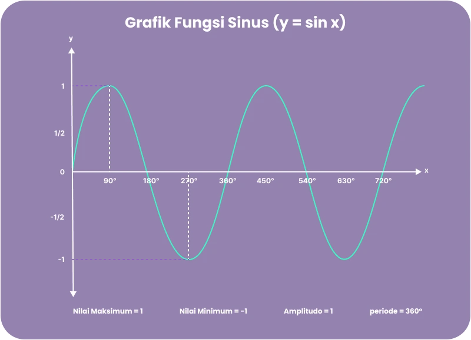

Grafik Fungsi Trigonometri
Mari Belajar Memahami Grafik Fungsi Trigonometri
Pernahkah kamu melihat gelombang suara, riak air, atau sinyal radio? Semua itu bisa digambarkan menggunakan grafik fungsi trigonometri! Di sini, kita akan belajar bagaimana "menggambar" fungsi sinus, cosinus, dan tangen, serta memahami apa makna di balik bentuk gelombangnya yang unik. Siap berpetualang?
Mulai Belajar Sekarang!Kenapa & Dari Mana?
Trigonometri adalah cabang matematika yang mempelajari hubungan sudut dan sisi pada segitiga. Istilah trigonometri berasal dari bahasa Yunani trigonon (segitiga) dan metron (ukuran). Ilmu ini awalnya muncul pada abad ke-3 SM untuk membantu perhitungan astronomi.
Dengan konsep trigonometrik, banyak masalah praktis bisa diselesaikan tanpa perhitungan langsung: misalnya mengukur tinggi gunung atau lebar sungai dari jarak jauh tanpa harus memanjat atau menyeberang.
Trigonometri juga digunakan luas dalam kehidupan nyata – mulai dari astronomi, navigasi, geografi, hingga rekayasa dan ilmu alam lainnya. Jadi, mempelajari sejarah singkat trigonometri (yakni asal-usul dan namanya) serta kegunaannya di berbagai bidang membantu memahami pentingnya materi ini.
Apa itu Persamaan Grafik Fungsi Trigonometri?
Sesuai namanya, Persamaan Grafik Fungsi Trigonometri merupakan persamaan yang memuat Fungsi Trigonometri dari sudut yang belum diketahui nilainya. Gimana tuh, maksudnya?
Sebelumnya Apa sih fungsi Trigonometri?
Fungsi trigonometri adalah suatu fungsi yang grafiknya berulang secara terus menerus dalam periode tertentu. Seperti terlihat pada header di artikel ini, grafik fungsi trigonometri terdiri atas bukit dan lembah yang berulang-ulang secara terus menerus dalam periode tertentu.
Sebelumnya kita akan membahas apa saja unsur dari grafik fungsi trigonometri nih, yuk kita lihat penjelsanannya
a. Periode
Periode adalah jarak antara dua puncak atau dua lembah pada grafik fungsi trigonometri. Atau dapat diartikan juga sebagai jarak terjadinya grafik fungsi trigonometri tersebut berulang.
b. Amplitudo
Amplitudo adalah setengah dari selisih nilai maksimum dan minimum dari suatu fungsi. Rumus amplitudo yakni sebagai berikut:

c. Nilai Maksimum
Nilai maksimum adalah nilai tertinggi yang bisa dicapai oleh suatu fungsi trigonometri. Pada grafik, nilai maksimum merupakan titik puncak dari bukit.
d. Nilai Minimum
Nilai minimum adalah nilai terendah yang bisa dicapai oleh suatu fungsi trigonometri. Pada grafik, nilai minimum merupakan titik terendah dari lembah.
Cara Menggambar Grafik Fungsi Trigonometri
Sebelum mulai menggambar Grafik Fungsi Trigonometri, kamu harus tahu dulu, nih, jenis-jenis Fungsi Trigonometri. Mengapa? Karena beda fungsi beda pula grafiknya, dong.
Pembagian Jenis-jenis Fungsi Trigonometri tentu masih berkaitan dengan tiga sekawan trigonometri, yaitu sin, cos, dan tan.
Untuk menentukan grafiknya, kamu harus inget-inget lagi sudut istimewa. Nilai dari sudut istimewa berkaitan juga dengan materi Grafik Fungsi Trigonometri, lho. Untuk membantu kamu mengingat nilai sudut istimewa sinus, cosinus, dan tangen, perhatikan tabel berikut.

a. Grafik Sin(y = sin x)

Grafik y= sin x berbentuk gelombang naik-turun yang berulang (periodik) dengan amplitudo 1 (nilai maksimum ±1) dan periode 360° (atau 2π radian). Grafik sinus memotong sumbu-x di (0,0) (karena sin 0 = 0), kemudian naik ke 1 di x = 90°, turun lagi ke 0 di x = 180°, mencapai -1 di x = 270°, dan kembali ke 0 di x = 360°.
Dengan demikian grafik ini berulang terus tiap 360°. Untuk menggambar sketsa grafik sinus, tentukan terlebih dahulu nilai pada sudut-sudut khusus tersebut, lalu hubungkan titik-titik dengan kurva halus.
- Domain (himpunan input): semua bilangan real.
- Range (himpunan nilai keluaran): [−1,1].
- Amplitudo: 1 (jarak dari garis tengah ke puncak atau lembah).
- Periode: 360° (jarak horizontal antar pola bergelombang yang sama).
- Nilai penting: sin 0°= 0, sin 90°= 1, sin 180° = 0, sin 270°= −1, sin 360°= 0
- Grafik sinus berupa gelombang mulus yang simetris, tidak mempunyai nilai ekstrim selain ±1.
b. Grafik Sin(y = cos x)
Grafik y=cos x juga berupa gelombang periodik dengan amplitudo 1 dan periode 360°. Perbedaannya, cosinus pada x = 0 sudah bernilai 1 (sedangkan sinus 0), lalu turun ke 0 di x = 90°, mencapai –1 di x = 180°, naik ke 0 di x = 270°, dan kembali ke 1 di x = 360°.
Dengan kata lain, grafik cosinus sama dengan sinus tapi “dimulai” pada puncak di x = 0. Untuk sketsa, tentukan titik-titik utama tersebut, kemudian gambar kurva yang halus.
- Domain: semua bilangan real
- Range: [−1,1].
- Amplitudo: 1
- Periode: 360°
- Nilai penting: cos 0° = 1, cos 90° = 0, cos 180° = −1, cos 270° = 0, cos 360° = 1
- Grafik cosinus sama-sama bergelombang mulus; tidak ada nilai lainnya selain ±1 sebagai puncak dan lembah.
c. Grafik Sin(y = tan x)

Grafik y = tan x berbeda secara bentuk: nilai tan x \tan xtanx tidak dibatasi antara –1 dan 1, dan grafiknya memiliki asimtot vertikal. Fungsi tangen memiliki periode 180° (atau π\piπ radian) Contohnya, tan 0° = 0. Saat x mendekati 90°, tan x menuju tak terhingga (grafik menanjak ke atas tanpa batas).
Pada x = 90° itu sendiri grafik terputus (tidak terdefinisi) dan muncul asimtot vertikal. Antara 90°–180° terdapat satu gelombang lagi: tan 180° = 0, tan 135° = −1, dan sebagainya. Intinya tan(x) tidak memiliki nilai maksimum/minimum dan amplitudo tidak ada karena grafiknya naik turun hingga tak hingga.
- Domain: semua bilangan real kecuali 90° + k ⋅ 180° (karena di titik-titik ini cos x = 0 dan tan x tak terdefinisi).
- Range: semua bilangan real, grafik meliputi seluruh nilai dari −∞ ke +∞
- Amplitudo: tidak terdefinisi (grafik tak terbatas)
- Periode: 180° (setiap 180° pola grafik tangen mengulang).
- Asimtot: garis vertikal pada x=90° + 180° k (k bilangan bulat). Grafik tetap simetris di sekitar asimtot.
Untuk menggambar sketsa, tandai terlebih dahulu asimtot (misalnya x=90°,270°, …), dan titik-titik khusus seperti tan 0 = 0. Kemudian gambar cabang-cabang halus antara asimtot-asimtot tersebut.
Selain itu, terdapat pula grafik tidak baku pada fungsi trigonometri yang lebih kompleks. Grafik tidak baku ini digambar berdasarkan fungsi seperti tertera dalam tabel berikut.

Simulasi Grafik Fungsi Trigonometri Sin
Geser slider untuk melihat bagaimana parameter a, b, c, dan d memengaruhi grafik y = a sin(bx + c) + d secara real-time.
Uji Pemahamanmu!
Saatnya Pop Quiz!!
Seberapa jauh pemahamanmu tentang grafik trigonometri? Ayo coba kuis seru ini!
Klik Gambar dibawah ini!
klik link berikut jika tetap tidak muncul: Quiz TrigonometriSumber Belajar
Berikut adalah sumber pembelajaran tambahan untuk membantu kamu untuk lebih memahami materi ini: